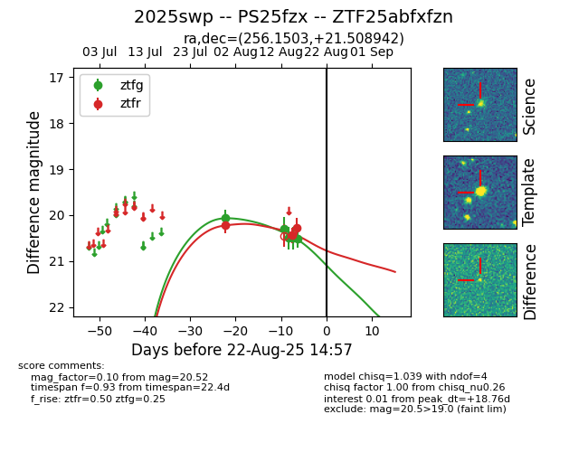

Target 2025swp at 2025-08-21 09:49, see:
FINK: fink-portal.org/ZTF25abfxfzn
Lasair: lasair-ztf.lsst.ac.uk/objects/ZTF25abfxfzn
ALeRCE: alerce.online/object/ZTF25abfxfzn
TNS: wis-tns.org/object/2025swp
YSE: ziggy.ucolick.org/yse/transient_detail/2025swp
alt names
ZTF25abfxfzn (ztf,alerce)
2025swp (tns,yse)
PS25fzx (panstarrs)
coordinates:
equatorial (ra, dec) = (256.1503,+21.50894)
galactic (l, b) = (42.2010,+32.63899)
photometry
last ztfg=20.52, ztfr=20.27
5 ztfg, 3 ztfr detections
